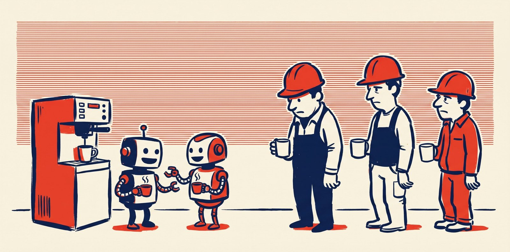

Intelligence artificielle · Opinion
Articles
Une série d'articles sur l'IA et le travail, par Théo Dupont. Ils n'engagent que leur auteur.
 Article 1
Article 1Une entreprise de construction doit-elle devenir une entreprise de tech ?
Nos salariés touchent davantage un clavier qu'une banche, le coût du logiciel s'est effondré, et la fenêtre ne restera pas ouverte longtemps.
Novembre 2026 · Lecture : 6 min Article 2
Article 2Ce que l'IA changera dans nos process
Rebattre les cartes de la connaissance, l'économie de l'attention, la tokenisation du travail : et après, que fait-on du temps gagné ?
Novembre 2026 · Lecture : 7 min
Article 3Le travail qu'on ne voit plus
Le lieu, le mérite, les horaires : ce que l'IA pourrait changer dans la notion même de travail.
Novembre 2026 · Lecture : 8 min